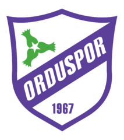

Orduspor

Tarihçe
- 5 Mart 1967 tarihinde kuruldu.
- 1967 yılında 1.Lig'te başladı.
- 1973 yılında 1.Lig şampiyonu oldu.
- 1975 yılında Süper Lig'e yükseldi.
- 1981 yılında 1.Lig'e düştü.
- 1982 yılında 1.Lig şampiyonu oldu.
- 1983 yılında Süper Lig'e yükseldi.
- 1986 yılında 1.Lig'e düştü.
- 1996 yılında 3.Lig'e düştü.
- 1997 yılında 1.Lig'e yükseldi.
- 2000 yılında 3.Lig'e düştü.
- 2002 yılında 2.Lig'e yükseldi.
- 2004 yılında 2.Lig şampiyonu oldu.
- 2005 yılında 1.Lig'e yükseldi.
- 2011 yılında Süper Lig'e yükseldi.
- 2013 yılında 1.Lig'e düştü.
- 2015 yılında 2.Lig'e düştü.
- 2016 yılında 3.Lig'e düştü.
- 2017 yılında BAL ligine düştü.
- 2018 yılında Ordu 1. Amatör'e düştü.
Aktif kadro
- Batuhan Armağan Güldü
- Oğuzhan Aydın
- Ahmet Yasin Tekin
- Mustafa Şıh
- Münir Aşkar
- Mehmet Cuma Yıldız
- Mehmet Cemil Ersöz
- Ekrem İyikasap
- Muhammed Tunçer
- Fırat Kaya
- Halil İbrahim Türüç
- Muhammed Çelik
- Seyit Murat Katırancı
- Mustafa Arslan
- Gökdeniz Kuzu
- Arda Coşkun
- Fuat Can Çelebi
- İlhan Önder
- Ömer Faruk Ateş
- Yusuf Eriş
Lig mücadeleleri
Süper Lig:
- 1975-1981
- 1983-1986
- 2011-2013
1. Lig:
- 1967-1975
- 1981-1983
- 1986-1996
- 1997-2000
- 2005-2011
- 2013-2015
2. Lig:
3. Lig:
- 1996-1997
- 2000-2002
- 2016-2017